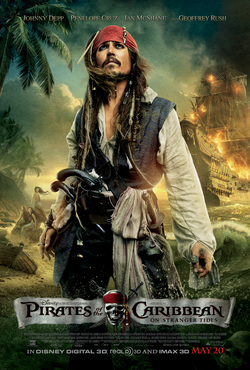

Pirates of the Caribbean: The Curse of the Black Pearl
28.06.2003

In 1720, while sailing to Port Royal,
Jamaica aboard the HMS Dauntless, Governor Weatherby Swann, his daughter Elizabeth and crew
encounter a shipwreck and recover a boy, Will Turner. Elizabeth discovers a golden pirate
medallion around his neck and takes it. Eight years later, Captain James Norrington is promoted
to commodore and proposes to Elizabeth. Her corset makes her faint and fall into the sea,
causing the medallion to emit a pulse. Captain Jack Sparrow, having just arrived in Port Royal
to commandeer a ship, rescues Elizabeth. Norrington identifies Jack as a pirate, and a chase
ensues.
Pirates of the Caribbean: Dead Man's Chest
16.06.2006

The wedding of Will Turner and Elizabeth Swann is halted when Lord Cutler Beckett,
chairman of the East India Trading Company, arrives with arrest warrants for them, and also for
Commodore James Norrington, who allowed Captain Jack Sparrow to escape. Norrington has resigned
and disappeared after losing the Navy's flagship, HMS Dauntless,
in a hurricane while pursuing Jack. Meanwhile, Jack is visited by Will's father,
Bootstrap Bill Turner, aboard the Black Pearl. Bootstrap is a crewman on the
Flying Dutchman, captained by Davy Jones. Jack previously bartered a deal with Jones to raise
the Pearl from the depths, and must now join the Dutchman's crew or be dragged to Davy Jones'
Locker by the Kraken. Meanwhile, Beckett promises to free Elizabeth if Will brings him Jack's
magical compass, which points to whatever the holder wants most.
Pirates of the Caribbean: At World's End
19.05.2007

To control the oceans, Lord Cutler Beckett executes anyone associated with piracy in Port Royal
and orders Davy Jones to destroy all pirate ships. Condemned prisoners sing "Hoist the Colours"
to compel the nine Pirate Lords to convene at Shipwreck Cove to hold the Brethren Court. Because
Pirate Lord Jack Sparrow never named a successor before being dragged to Davy Jones' Locker,
Hector Barbossa, Will Turner, Elizabeth Swann, Tia Dalma, and the surviving
crew of the Black Pearl plot to rescue Jack. In Singapore, the crew meet Pirate Lord Sao Feng,
who owns navigational charts to the Locker. Will secretly promises to give Jack to Feng
in return for the Pearl, intending to use it to rescue his father "Bootstrap Bill" Turner
from the Flying Dutchman.
Pirates of the Caribbean: On Stranger Tides
07.05.2011

In the middle of the 18th century, a man is rescued from the ocean off the Spanish coast
and brought to King Ferdinand of Spain, where he claims to be a crewmate of Juan Ponce de León,
who disappeared 200 years ago searching for the Fountain of Youth. Seventeen years after
the battle of Calypso's maelstrom,[N 1] after a failed attempt to rescue his first mate,
Joshamee Gibbs, from execution in London, Captain Jack Sparrow is brought before King George II.
The king asks Jack to guide an expedition to locate the Fountain of Youth,
before King Ferdinand and the Spanish Navy locate it. Captain Hector Barbossa, now a privateer,
and sporting a peg leg, is captaining the expedition,
though only requires Sao Feng’s navigational charts, rather than Jack.
Pirates of the Caribbean: Dead Men Tell No Tales
11.05.2017

Thirteen years after the battle of Calypso's maelstrom,a twelve-year-old Henry Turner boards
the Flying Dutchman and informs his father, Will, that the curse which binds
Will to the Dutchman and only permits him to step on land once a decade can be broken
by the Trident of Poseidon. Henry intends to recruit Captain Jack Sparrow to help find it,
but Will believes this is impossible and orders Henry to leave. Will and the Dutchman
then disappear into the sea, but Henry vows to find Jack and the Trident.